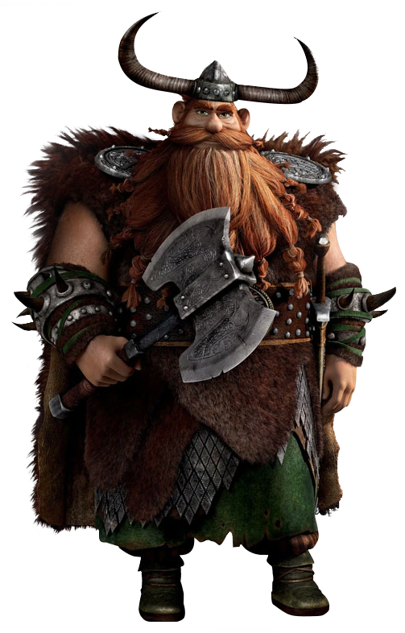

Chef de la tribu de Beurk, père de Harold
| Rôle | Chef de tribu |
| Affiliation | Tribu de Beurk |
| Dragon | Agathe (Ébouillantueur) |
| Famille | Harold (fils), Ingrid (épouse) |
| Particularité | Force légendaire, autorité naturelle |
Stoïck la Brute est le chef imposant et respecté de la tribu de Beurk. Père de Harold, il incarne les valeurs vikings traditionnelles - force, honneur et protection des siens. Son évolution personnelle, passant d'un chasseur de dragons à un dresseur, est aussi significative que celle de son fils. Son Ébouillantueur Agathe est le reflet de sa puissance brute.
Sa mort dans "Dragons 2" est l'un des moments les plus marquants de la franchise, laissant Harold endosser pleinement le rôle de chef.